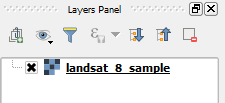
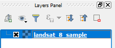

This lesson's project contains one layer named landsat_8_sample.

The landsat_8_sample layer is an extract from a multi-spectral Landsat satellite image with 30m of ground resolution.
Typical multiband raster images, like orthophotos, are composed of 3 or 4 bands. These bands are assigned automatically to the Red, Green, Blue channels (in RGB) to be represented on the screen and, optionally, a fourth channel for setting transparency (in RGBa).
On the other hand, multi-spectral satellite imagery can provide more than four bands, which means that, for visualization, the user must choose, which bands to assign to the RGB channels. The example in this lesson has seven bands.
In this lesson's project, QGIS has assigned bands 1 to 3 to the Red, Green, and Blue channels, which, for Landsat 8 imagery, is not a very useful visualization. In the next steps, we will show how to change the band combinations.
In the Layers Panel, click the landsat_8_sample layer to make it the currently active layer. The layer's name will be highlighted.
